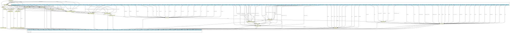

A CWL-based pipeline for processing RNA-Seq data (FASTQ format) and performing differential gene/transcript expression analysis. On the respective GitHub folder are available: - The CWL wrappers for the workflow - A pre-configured YAML template, based on validation analysis of publicly available HTS data - A table of metadata (``mrna_cll_subsets_phenotypes.csv``), based on the same validation analysis, to serve as an input example for the design of comparisons during differential expression analysis Briefly, the workflow performs the following steps: 1. Quality control of Illumina reads (FastQC) 2. Trimming of the reads (e.g., removal of adapter and/or low quality sequences) (Trim galore) 3. (Optional) custom processing of the reads using FASTA/Q Trimmer (part of the FASTX-toolkit) 4. Mapping to reference genome (HISAT2) 5. Convertion of mapped reads from SAM (Sequence Alignment Map) to BAM (Binary Alignment Map) format (samtools) 6. Sorting mapped reads based on chromosomal coordinates (samtools) Subsequently, two independent workflows are implemented for differential expression analysis at the transcript and gene level. **First**, following the [reference protocol](https://doi.org/10.1038/nprot.2016.095) for HISAT, StringTie and Ballgown transcript expression analysis, StringTie along with a reference transcript annotation GTF (Gene Transfer Format) file (if one is available) is used to: - Assemble transcripts for each RNA-Seq sample using the previous read alignments (BAM files) - Generate a global, non-redundant set of transcripts observed in any of the RNA-Seq samples - Estimate transcript abundances and generate read coverage tables for each RNA-Seq sample, based on the global, merged set of transcripts (rather than the reference) which is observed across all samples Ballgown program is then used to load the coverage tables generated in the previous step and perform statistical analyses for differential expression at the transcript level. Notably, the StringTie - Ballgown protocol applied here was selected to include potentially novel transcripts in the analysis. **Second**, featureCounts is used to count reads that are mapped to selected genomic features, in this case genes by default, and generate a table of read counts per gene and sample. This table is passed as input to DESeq2 to perform differential expression analysis at the gene level. Both Ballgown and DESeq2 R scripts, along with their respective CWL wrappers, were designed to receive as input various parameters, such as experimental design, contrasts of interest, numeric thresholds, and hidden batch effects.
{kind=link}